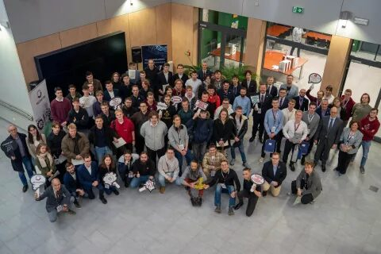

IV. Mechaton × HITACHI
Zadanie
Problem inżynierski
Temat od partneraZbiornik transformatora wymyślony na nowo
Wyniki
Zwycięskie zespoły
MechaCore
Adrian Milczarek, Grzegorz Ratajewski, Karol Merc, Nikodem Jędryka, Orest Yarovyi
Grupa Wsparcia
Bartłomiej Opala, Daniel Sujecki, Kacper Barejka, Oliver Ramlau
NMFNBNBC
Aleksander Gieszcz, Jakub Dobrysiak, Jan Polak, Maksymilian Becht, Piotr Maciejak
Materiały
Media edycji

Relacje
O edycji pisali
Relacja: 48 godzin technologicznych emocji — intensywnie, inspirująco, inżyniersko (Życie Uczelni)